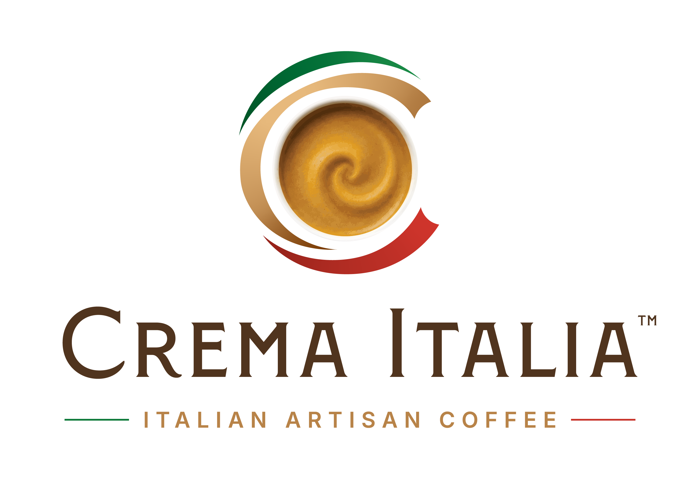

July 2026 · Version 2.1 · English
The canonical reference
Version 2.1 · July 2026 · Owner: Crema Italia, LLC · Lutz, Florida, USA · cremaitalia.com · Applies to: all Crema Italia documents (DOCX, PDF, Markdown), web pages, decks, email templates, and partner-facing collateral.
This is the canonical reference. When you ask a tool to build a Crema Italia document,
slide, or web page, point it at this file and the accompanying Crema Italia Brand CSS.css
and the finalized logo files in Logo Assets/. The look established by the Roaster
Onboarding & Partnership Guide is the visual reference; this document codifies it.
What changed in v2.1 (2026-07-14)
One voice rule added (§9): no em-dashes in customer-facing copy, with the semicolon → spaced-hyphen and trailing → ellipsis substitutions. Color, type, logo, and layout grid are unchanged from v2.0; this is a copy-only minor revision.
What changed in v2.0 (artist rebrand, 2026-07-01)
A graphic artist delivered the finalized Crema Italia™
mark (vector master + full lockup set) for the trademark filing. Two brand systems were revised as a
result: the palette — Espresso Brown is now #55331B and Crema Gold is
#B88348 (replacing the former #3B1F12 / #C46A1F); and the
type — the wordmark is set in Montecatini Pro (in the logo art only), and live
web/document headings use Marcellus, ending the earlier Cormorant→Lora display-font
history. Green, red, cream, and Inter body type are unchanged.
Crema Italia is a small, selective importer of artisan Italian coffee. The visual language must read as:
When in doubt: fewer elements, more whitespace, smaller logo, larger margins.
Files: the finalized artist mark lives in Logo Assets/ — a vector
master (Art Files/*.ai) plus matched EPS/, PDF/,
SVG/, PNG/ exports and generated Web/ derivatives. Three
lockups — main (vertical), horizontal, and favicon
(cup only) — each in a light-background and a dark-background version.
PNG/CI Logo for Dark Background - Transparent.png — never the light mark recolored. Never re-color the cup..ai; re-export the others.All colors are derived from the finalized logo and its artist spec sheet. Use the role, not the hex name, when prompting.
| Role | Hex | RGB | Where it lives |
|---|---|---|---|
| Background — Cream | #FBF8F1 | 251, 248, 241 | Page background, document body, hero sections |
| Surface — Ivory | #FFFFFF | 255, 255, 255 | Tables, callout cards, web cards on cream |
| Espresso — Brown | #55331B | 85, 51, 27 | Body text, H1 headings, wordmark |
| Espresso — Soft Brown | #6B4A38 | 107, 74, 56 | Muted / secondary body, captions (interim) |
| Crema — Gold | #B88348 | 184, 131, 72 | H2 / sub-headings, accents, links, key numbers |
| Crema Light | #E8A86A | 232, 168, 106 | Hover states, light fills, chart shades (interim) |
Interim tokens (Espresso Soft, Crema Light, and hover
#9C6E3C) are harmonizations pending re-derivation from the two artist hero tones.
| Role | Hex | RGB | Where it lives |
|---|---|---|---|
| Tricolore Green | #0E7A3A | 14, 122, 58 | Top-left page rule, footer bar, ENGLISH column markers |
| Tricolore Red | #C8342B | 200, 52, 43 | Top-right page rule, footer bar, ITALIANO column markers |
The flag colors are decorative rules, never large fills. Think: a pencil-thick rule across the top of the page, a 6 mm strip at the foot of the cover. Never block colors.
| Role | Hex | Use |
|---|---|---|
| Hairline | #D9D2C2 | Column dividers, table borders, footer rules |
| Mute | #8C7E6A | Page numbers, footer text, eyebrow labels (ENGLISH, ITALIANO) |
| Ink soft | #5A4A3F | Long-form body text where pure brown is too heavy |
| Pair (on Cream #FBF8F1) | Ratio | Status |
|---|---|---|
Espresso Brown #55331B | 10.6 : 1 | AAA |
Espresso Soft #6B4A38 | 7.4 : 1 | AAA |
Ink soft #5A4A3F | 8.0 : 1 | AAA |
Crema Gold #B88348 | 3.1 : 1 | Large display only — ≥ 18 pt / 24 px (or bold ≥ 14 pt) |
Mute #8C7E6A | 3.7 : 1 | Captions / fine print only |
Rule: Crema Gold’s contrast on cream (3.1 : 1) is lower than the terracotta it replaced — it clears WCAG only for large text. Use gold for large headings, short bold accent runs, links, and key numerals; never body copy or small text. When a gold element could fall below ~18 px, set it in Espresso Brown instead.
If a chart or web feature seems to need a new hue, derive it from Crema Light, Espresso, or a desaturated Tricolore Green. The brand should never sprout a sixth or seventh accent.
Two live families plus the logo face. Hold this line — the document brand depends on it.
| Role | Family | Where to use |
|---|---|---|
| Logo wordmark | Montecatini Pro (Normale Semi-Bold) | Logo artwork only — already outlined in the files. Commercial font; licensing unconfirmed for any use beyond the outlined mark. |
| Display & Headings | Marcellus (serif, weight 400) | Cover title, H1, section headings, web/document display. The free Google-Font stand-in for Montecatini. |
| Body & UI | Inter (sans, 400 / 500 / 600) | All body text, tables, captions, web UI, buttons, tagline. |
Why this pairing: Marcellus echoes the classical Roman capitals of the wordmark and reads as considered and Italian without theatrics; Inter is a calm, neutral workhorse that handles bilingual copy and small sizes without strain. Both are free, web-safe, and embed cleanly in PDF.
Marcellus is roman-only — it ships a single 400 weight with no italic. Two consequences: (1) heading hierarchy is set by size, not weight; use bold Inter for emphasis within text. (2) The English-vs-Italian cue is now carried by the ENGLISH / ITALIANO eyebrow label and column position — not by italic display type. Reserve italics (Inter Italic) for references and short foreign words.
H2 sub-headings are set in Inter SemiBold (600) in Crema Gold, not in serif. Keep this rule — it visually separates major editorial titles (Marcellus, brown) from in-page section markers (Inter, gold).
| Element | Family | Wt | Size | Color | Lead |
|---|---|---|---|---|---|
| Cover title | Marcellus | 400 | 30–36 pt | Espresso #55331B | 1.1 |
| Cover sub-title (Italian) | Marcellus | 400 | 15–18 pt | Espresso Soft #6B4A38 | 1.2 |
| H1 page heading | Marcellus | 400 | 22–24 pt | Espresso #55331B | 1.15 |
| H2 sub-heading | Inter | 600 | 13 pt | Crema Gold #B88348 | 1.25 |
| Eyebrow (ENGLISH/ITALIANO) | Inter | 600 | 8.5 pt, +0.12 em | Crema Gold #B88348 | 1.0 |
| Body | Inter | 400 | 10.5 pt | Espresso #55331B | 1.45 |
| Body emphasis | Inter | 600 | 10.5 pt | Espresso #55331B | 1.45 |
| Caption / reference | Inter Italic | 400 | 9 pt | Espresso Soft #6B4A38 | 1.4 |
| Table header | Inter | 600 | 9.5 pt | Cream on Espresso | 1.3 |
| Table body | Inter | 400 | 9.5 pt | Espresso #55331B | 1.4 |
| Footer / page no. | Inter | 400/500 | 8.5 pt | Mute #8C7E6A | 1.3 |
| Element | Family | Wt | Size | Color |
|---|---|---|---|---|
| Hero / cover | Marcellus | 400 | 4.5 rem / 72 px | Espresso |
| H1 | Marcellus | 400 | 2.5 rem / 40 px | Espresso |
| H2 | Inter | 600 | 1.125 rem / 18 px | Crema Gold |
| H3 | Inter | 600 | 1 rem / 16 px | Espresso |
| Body | Inter | 400 | 1.0625 rem / 17 px | Espresso |
| Small / caption | Inter | 400 | 0.875 rem / 14 px | Espresso Soft |
| Eyebrow | Inter | 600 | 0.75 rem / 12 px, +0.12 em, uppercase | Crema Gold |
Display: "Marcellus", "Georgia", serif · Body: "Inter", "Helvetica Neue", "Arial", sans-serif. For Word documents, ship Marcellus and Inter as embedded named styles; if a recipient lacks them, Word falls back to Georgia and Calibri — close enough to preserve hierarchy.
| Margin | Size |
|---|---|
| Top / Bottom | 0.85 in |
| Left & Right | 0.75 in |
| Gutter (between bilingual columns) | 0.4 in |
| Column width (each) | 3.55 in |
#0E7A3A left, red #C8342B right, ~1.6 in long, 1.2 pt thick. Wordmark “Crema Italia” sits left in 9–11 pt Marcellus; running title sits right in 9 pt Inter.#D9D2C2, 0.5 pt. Below it, footer “Crema Italia, LLC · Lutz, Florida, USA · cremaitalia.com” left, “Page N” right, both 8.5 pt Inter Mute.#55331B with cream text; body rows on Ivory #FFFFFF; row separators #D9D2C2. No vertical lines.#FBF8F1 on ivory page, 1 pt left rule in Crema Gold #B88348, 0.25 in inner padding.The accompanying Crema Italia Brand CSS.css (v1.2) is the canonical implementation. It exposes every value above as a CSS custom property and includes ready-made classes for .eyebrow, .bilingual, .callout, .flag-rule, and .btn-primary.
Marcellus + Inter from Google Fonts.--ci-crema-hover: #9C6E3C.#B88348.#B88348 and Espresso Soft #6B4A38.#0E7A3A, Espresso Brown #55331B, Crema Light #E8A86A — in that order.#D9D2C2, dashed, 0.5 pt. Axis labels: Inter 9 pt, Mute. - ); where a sentence trails into a follow-on thought, use an ellipsis (...); if a case is genuinely ambiguous, ask. Customer-facing copy only — internal documents, this one included, may still use them.Crema_Italia_<Topic>_v<MAJOR>.<MINOR>.{docx|pdf}.Logo Assets/ — Art Files/ (.ai master), EPS/, PDF/, SVG/, PNG/, Web/. Lockups: main, horizontal, favicon — each light and dark.Crema Italia Brand CSS.css, kept under version control._v2 > _v1).#FBF8F1, not white (except inside tables/cards).Document maintained by Crema Italia, LLC.
Companion files: Crema Italia Brand CSS.css (v1.2), the finalized logo set in
Logo Assets/, and this document’s editable source
Crema_Italia_Brand_Standards_v2.1.html. Supersedes Brand Standards v2.0 (July 2026) and v1.0 (May 2026).